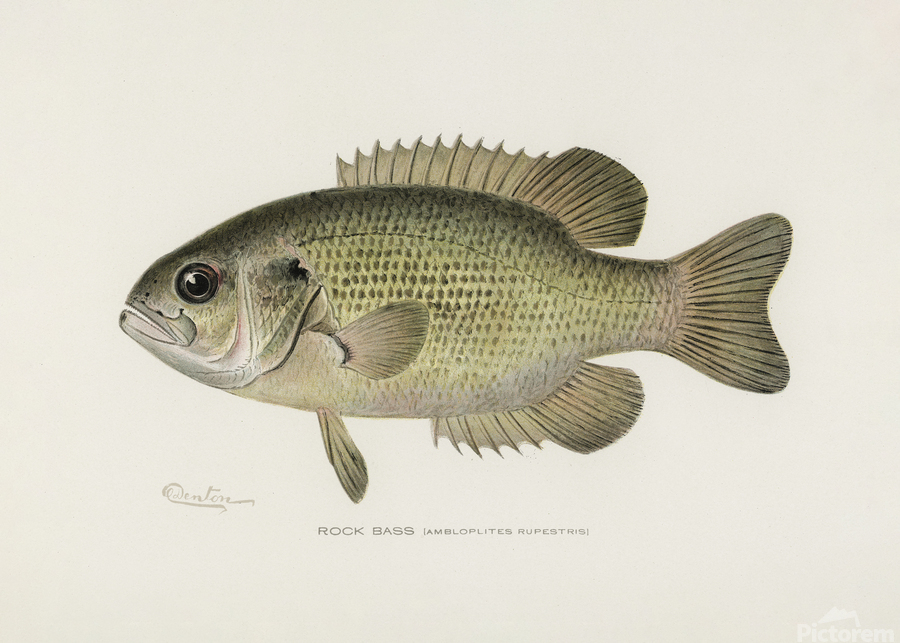
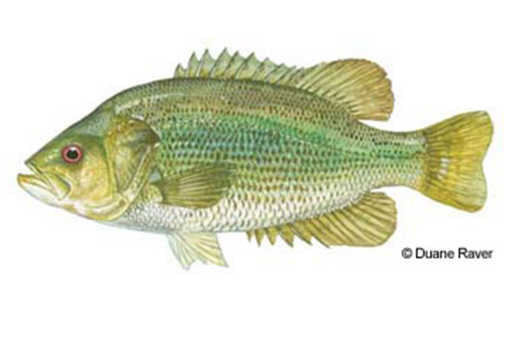
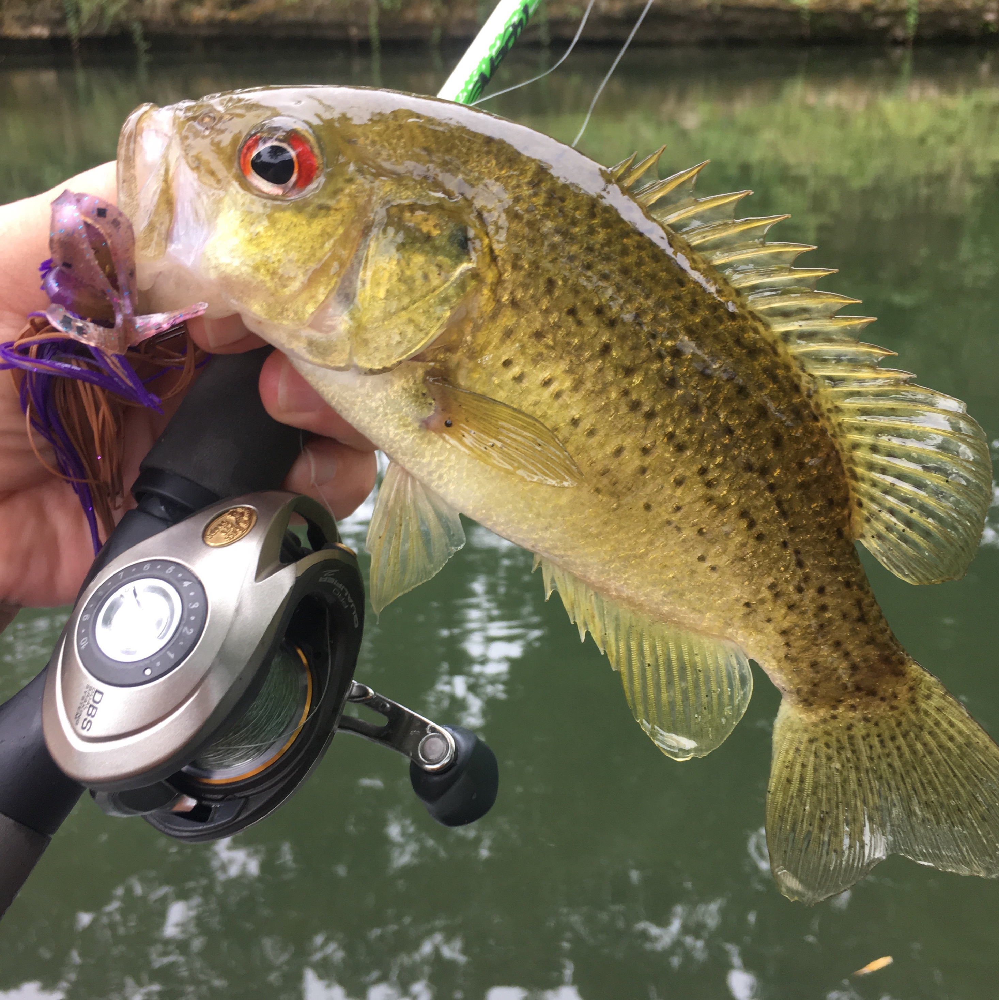

<!DOCTYPE html>
<html>
    
     <link rel=" stylesheet" href="../CSS/fish.css">
</html>
<head>
    <body>
        <a href="Fishing.html">Home page</a>
        <a href="fishing 2.html" target="_blank"> Page 2 Sea Bass</a>
        <a href="fishing 3.html" target="_blank"> Page 3 sunfish family/ Black Basses</a>
        <h1>Ambloplites family</h1>

                  <div class="ih"><p>Ambloplites family</p></div>
                   <br>
<div class="p2"><p>The Rock bass is a small freshwater fish in the Sunfish famliy. They known for their red eyes, olive color and, dark mottled spots. They weight 1lb and are 6-10 inches. They are primarily found in clear, slow-moving rivers, streams, and rocky lakeshores. Theycan live up to 10-12 years.</p></div>

            <div class="p2"><p>The Roanoke Bass is a rare freshwater fish that live in Virginia and North Carolina. They are often founld in rocky flowing streams. They also have red eyes and olive brown colors. They rarely exceeding 1 pound, though the world record is 2 lb 5 oz.
</p></div>
              
              <div class="p4"><p>Photo from unkown Roanoke Bass | NC Wildlife</p></div>
              <div class="p2"><p> The Shadow Bass is often called goggle eye. It is a small freshwater fish that is olive green and is native to the southeastern United States. they love to eat crayfish, insects, and small fish. They grow 4 to 8 inches and there maximum size is 12 inches and weighing roughly 1 lb.  </p></div>
               
                <div class="p2"><p>The Ozark bass is a small freshwater fish that is native to Missouri and Arkansas they grow up to 5 inches and can go up to 11 inches and weighed 1 lb. They can live up to 6 years. They also have black spots and have elongated body.</p></div>
               


        
    </body>
</head>
 
